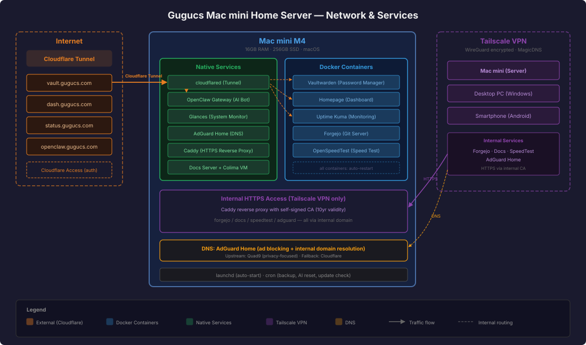

Mac mini M4 を24時間稼働のホームサーバーとして運用しています。

サーバーは3つのネットワーク経路でアクセスされます：
External Access (Internet) Cloudflare Tunnel + Cloudflare Access を使い、インターネットから安全にサービスを公開。全アクセスにメール認証を要求（一部APIはバイパス）。
Internal Access (Tailscale VPN) WireGuard ベースの
Tailscale でプライベートネットワークを構築。Caddy リバースプロキシと
AdGuard Home DNS を組み合わせて、.ailin
ドメインで内部サービスに HTTPS アクセス。自己署名
CA（有効期限約10年）を各デバイスにインストール済み。
DNS AdGuard Home を DNS サーバーとして運用。広告ブロック + 内部ドメインの名前解決を担当。上流は Quad9（プライバシー重視）、フォールバックに Cloudflare。
Bitwarden 互換のセルフホスト型パスワードマネージャー。ブラウザ拡張・モバイルアプリから利用可能。毎日自動バックアップ。
サーバーの状態、CPU/メモリ使用率、Docker コンテナの状況、為替・株価・暗号資産の市場データをリアルタイム表示するダッシュボード。
全サービスの死活監視。ダウン時は LINE に自動通知。ステータスページを公開。
LINE と Discord で動く AI チャットボット。Google Gemini 2.5 Flash を使用。主な機能： - 日常会話・質問応答 - 毎朝の AI ニュース配信（LINE） - 紙の書類をスキャン → PDF 変換 → OCR → Google Drive に自動分類保存 - 天気予報 - Discord サーバー管理
プライベート Git サーバー。GitHub のセルフホスト版のようなもの。サーバー構成ドキュメントや AI Bot のワークスペースをバージョン管理。Tailscale 内部からのみアクセス可能。
HTML5 ベースのネットワーク速度測定ツール。外部サービスを使わずにサーバーとの回線速度を計測可能。
ネットワーク全体の広告ブロック + 内部ドメイン解決。Tailscale に接続するだけで全デバイスに適用。
このドキュメントのソース Markdown を pandoc で HTML 化し、内部サーバーで配信。ファイル変更を自動検知して即座に反映。
CPU、メモリ、ディスク、ネットワーク、Docker コンテナの状態をリアルタイムに監視する API サーバー。Homepage ダッシュボードのデータソース。
| Category | Technology |
|---|---|
| Virtualization | Colima (Lima VM) |
| Containers | Docker (5 containers) |
| Reverse Proxy | Caddy v2 (HTTPS, internal CA) |
| Tunnel | Cloudflare Tunnel + Access |
| VPN | Tailscale (WireGuard) |
| DNS | AdGuard Home + Quad9 |
| AI Model | Google Gemini 2.5 Flash (via OpenRouter) |
| AI Framework | OpenClaw |
| Git | Forgejo |
| Monitoring | Uptime Kuma + Glances |
| Automation | launchd + cron |
| Build | pandoc (Markdown → HTML) |
| Device | OS | Role |
|---|---|---|
| ailin (Mac mini) | macOS | Server (Exit Node) |
| gugucs | Windows | Desktop PC |
| z-fold7 | Android | Smartphone |
| Item | Monthly Cost |
|---|---|
| Cloudflare (DNS + Tunnel + Access) | Free |
| Tailscale (Personal) | Free |
| LINE Official Account (200 msgs/month) | Free |
| OpenRouter API (Gemini 2.5 Flash) | ~¥500 |
| Domain (gugucs.com) | ~¥100/month equivalent |
| Electricity (Mac mini idle ~5W) | ~¥300 |
| Total | ~¥900/month |
Last updated: 2026-03-01